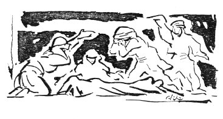

MEMEDİN AĞIDI
Maraşa bağlı Andırın ilçesinin Geben köyünden Memet adındaki delikanlı 1920‘de gerdeğe gireceği gece ölüyor. Ağıdı Memedin anasıyla nişanlısı yakıyor.
Gökte bulut yan gidiyor
Derelerden kan gidiyor
Ulaş Doktor Osman Beyim
Memedimden can gidiyor
Memedimin del'anası
Bugün Memedin kınası
Bu da bizden kanun kalsın
Düğünde özne ölmesi
Memedimin atı iki
Ayakları ala seki
Yıkman bunun bayrağını
Dolanır da gelir belki
Çıktım kavak yarısına
Balta vurdum kurusuna
Küs mü gittin Memet oğlum
Beş bacının birisine
Tan davulu çalınıyor
Harman yeri yarılıyor
Okuntu saldığın Beyler
Cenazene deriliyor
Ben süpürmem avlunuzu
Böyle m'ettik gavlimizi
Ayağı kademsiz derler
Hiç görmedim oğlunuzu
Özne Damat.
Seki Sekil, atın bacaklarının ala olması.
Yıkman bunun bayrağını / Dolanır da gelir belki Düğünlerde evlerin avlusuna bir de bayrak dikilir. Bayrağı indirmeyin, diyor.
Tan davulu çalmıyor Köy düğünlerinde tanyerleri ışırken davul çalınır. Bu davulun, zurnanın bestesi hep aynıdır, değişmez.
Okuntu Düğünde oğlan evi, kız evi çağrı çıkarırlar. Bu çağrı, çağrıların önemine göre armağanlardır. Mendil, çorap, kilim, kuşak, boğa. Son yıllarda kart göndermek de okuntular arasına girdi.
Kademsiz Uğursuz.
